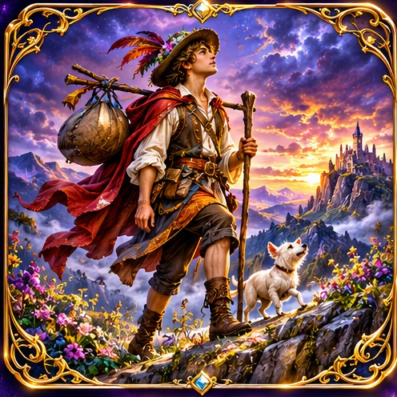
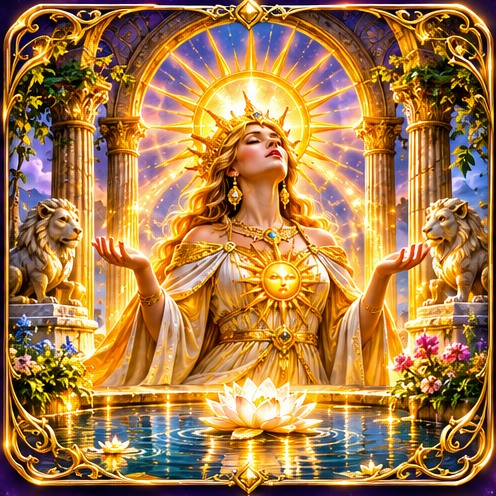
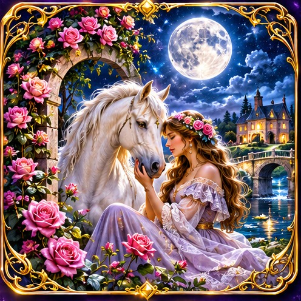
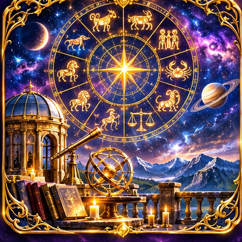
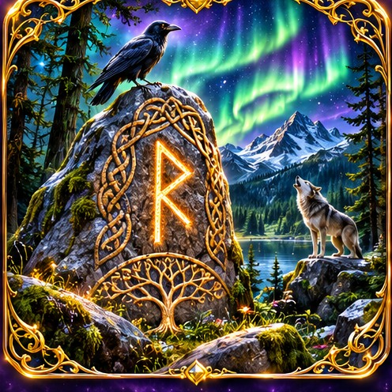
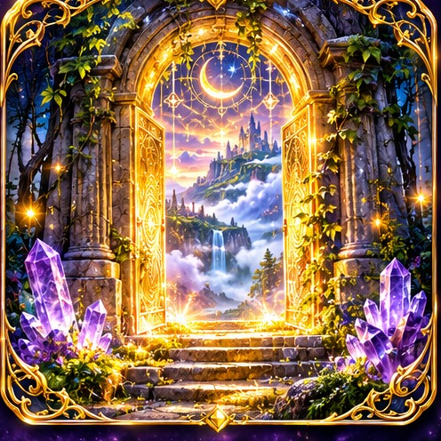

✧
Lecture croisée
Faites dialoguer plusieurs traditions symboliques autour d'une même question.
Ouvrir l'analyse croisée →Six traditions symboliques, six façons d’éclairer une question. Explorez les univers, réalisez vos tirages et construisez votre propre lecture, dans un sanctuaire pensé pour l’intuition et la découverte.
Choisissez une tradition et entrez dans son langage symbolique.

78 cartes · Arcanes majeurs et mineursLe voyage du Mat aux grands mystères
Entrer dans l’univers ↗
53 cartes · Influences et destinéeLes symboles planétaires et leurs messages
Entrer dans l’univers ↗
54 cartes · Associations et maisonsLes signes du quotidien et leurs rencontres
Entrer dans l’univers ↗
34 cartes · Signes et cycles célestesLes forces du zodiaque et les cycles
Entrer dans l’univers ↗
24 runes · Futhark ancienLes sagesses gravées du Nord
Entrer dans l’univers ↗
46 cartes · Seuils et archétypesLes passages intérieurs et les possibles
Entrer dans l’univers ↗Retrouvez vos lectures et approfondissez vos interprétations.
Faites dialoguer plusieurs traditions symboliques autour d'une même question.
Ouvrir l'analyse croisée →Configurez votre clé et les paramètres d'interprétation assistée.
Configurer l'IA →Retrouvez l'historique et les fonctions propres à chaque oracle.
Accéder aux consultations →